Try the math.
See it work.
Twelve interactive tools. Change the inputs, investigate patterns, and see the mathematics behind each answer.
See what happens.
Fresh views.
Pick a tool and experiment.
Every tool below opens a real interactive calculator or simulation.
 CoreEuclidean Algorithm Explorer
CoreEuclidean Algorithm ExplorerRepeated division, shown step by step.
Open tool →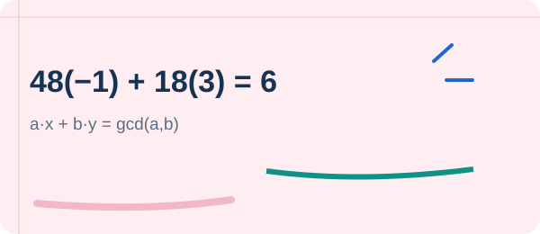
CoreExtended Euclidean AlgorithmFind Bézout coefficients from remainder steps.
Open tool →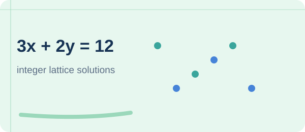
CoreLinear Diophantine SolverFind all integer solutions to ax + by = c.
Open tool →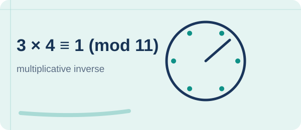
CoreModular Inverse CalculatorDetermine when a modular inverse exists.
Open tool →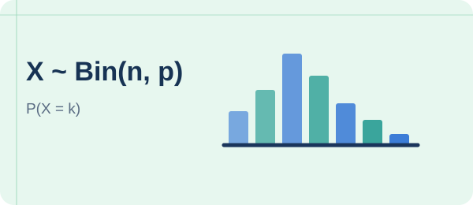
CoreBinomial DistributionExplore probability bars as n and p change.
Open tool →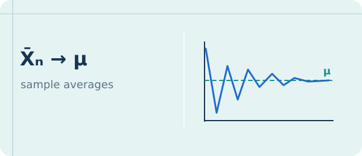
CoreLaw of Large NumbersWatch sample proportions approach their mean.
Open tool →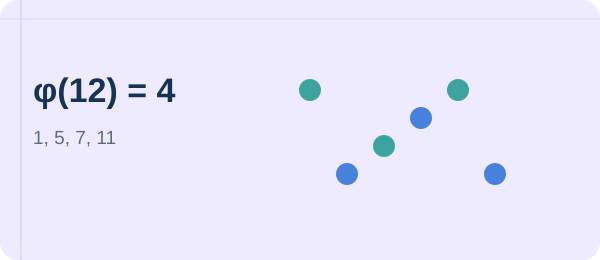
AdvancedEuler Totient & Divisor FunctionsExplore φ, τ, σ, and Möbius functions.
Open tool →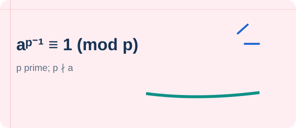
AdvancedFast Modular ExponentiationCompute powers with repeated squaring.
Open tool →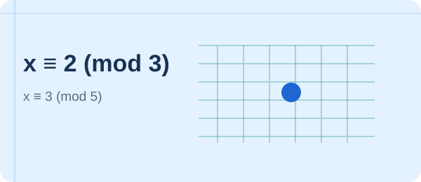
AdvancedGeneralized CRT SolverCombine congruences, even when moduli overlap.
Open tool →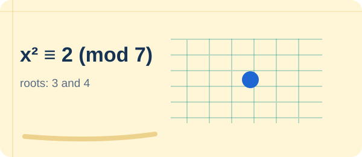
AdvancedQuadratic Residue ExplorerFind square roots and Legendre symbols.
Open tool →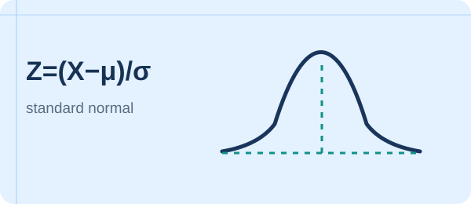
AdvancedNormal Distribution ExplorerCompute areas under the bell curve.
Open tool →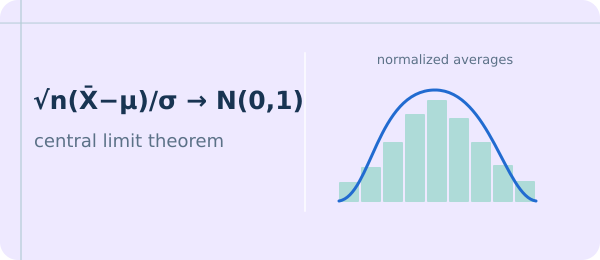
AdvancedCentral Limit Theorem SimulatorCompare sample means with the normal limit.
Open tool →Euclidean Algorithm Explorer
Find the GCD and a pair of Bézout coefficients for two positive integers.
Try 252 and 105, or enter any positive integers up to 1,000,000,000.
Extended Euclidean Algorithm
Track the remainders and Bézout coefficients to construct integers x, y satisfying ax + by = gcd(a, b).
Try 240, 46 to see 240(−9) + 46(47) = 2. Negative integers and zero are supported (except a = b = 0).
Linear Diophantine Equation Solver
Solve ax + by = c over the integers. Find a particular solution, then describe every integer solution using a parameter t.
The equation has integer solutions precisely when gcd(a,b) divides c, with a special case when a=b=0.
Modular Inverse Calculator
Find x such that ax ≡ 1 (mod m), or see why no inverse exists.
The inverse exists exactly when gcd(a, m) = 1. Modulus must be at least 2.
Binomial Distribution Explorer
Move the sliders to visualize the probability of exactly k successes in n independent trials.
For n = 10 and p = 0.50, the probability of exactly 5 successes is 0.2461.
Law of Large Numbers Simulator
Generate independent Bernoulli trials. Watch the observed proportion of successes fluctuate and (typically) stabilize near the true probability p as the sample grows.
Click “Run simulation” to start an independent sequence of random trials.
Euler Totient & Divisor Explorer
Factor n and compute φ(n), τ(n), σ(n), and the sum of the Möbius function across divisors.
Valid for 1 ≤ n ≤ 1,000,000,000; calculated by integer prime factorization.
Fast Modular Exponentiation
Compute a^e modulo m using binary exponentiation, without ever expanding a giant power.
Generalized Chinese Remainder Theorem
Find all integers x satisfying two congruences, including the case of non-coprime moduli.
Quadratic Residues & Euler's Criterion
Determine whether a is a square modulo an odd prime p and display every square root.
Legendre symbol is displayed only when a is nonzero modulo p; otherwise symbol equals 0.
Normal Distribution Probability Explorer
Standardize interval endpoints and approximate P(a ≤ X ≤ b) for X ~ N(μ, σ²).
CDF computed with a standard numerical approximation; displayed values are approximate.
Central Limit Theorem Simulator
Sample averages of independent Uniform(0,1) variables. Compare standardized averages to N(0,1).
Press Run to generate independent samples. Bars are simulated; the red curve is the standard normal density.